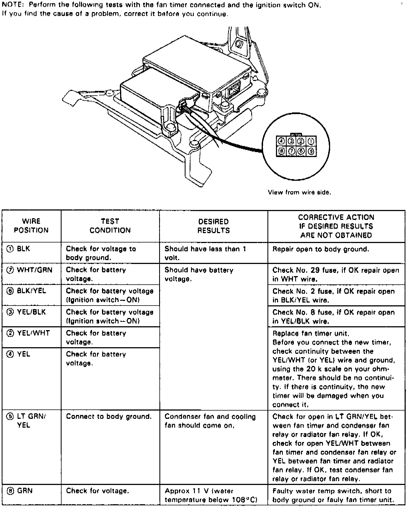

Operation CHARM
: Car repair manuals for everyone.
Home
>>
Acura
>>
1994
>>
Vigor L5-2451cc 2.5L SOHC G25A4 FI
>>
Repair and Diagnosis
>>
Relays and Modules
>>
Relays and Modules - Cooling System
>>
Radiator Cooling Fan Control Module
>>
Testing and Inspection
Radiator Cooling Fan Control Module: Testing and Inspection
Fig. 32 Fan Timer Unit Input Tests:

Refer to
Fig. 32
when testing fan timer unit.